JuiceWorks Pro at a glance — fifteen frames covering the preset library, the seven channels, the sequencer, haptics, and the Juice Arcade sample.
The frames below walk through the package in the order you meet it: the preset browser first, then the library, the no-code components, genre packs, channels, hit-stop, shake, the sequencer, preview, haptics, trigger kinds, scope, the sample, and the code path. Frames built on real captures show the real product; the plates are labelled as such on the frame itself. Each frame is captioned with what it shows; the Quick Start tours the same features step by step.
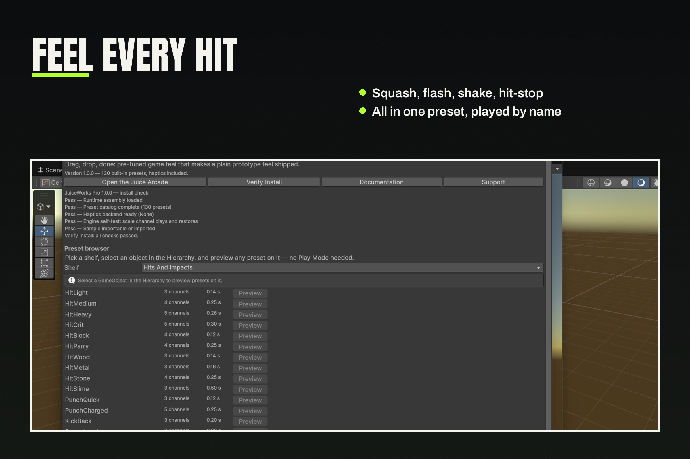
Feel every hit: squash, flash, shake, hit-stop — all in one preset, played by name.
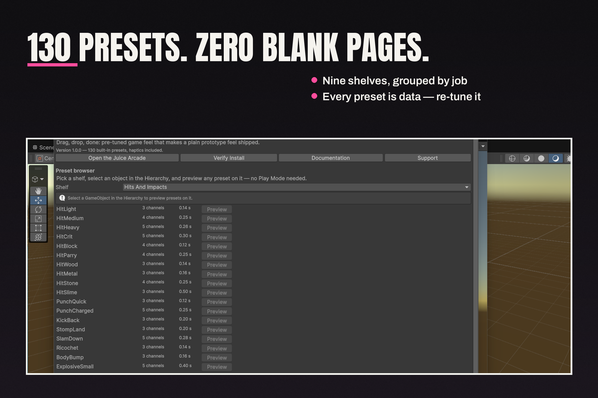
130 presets. Zero blank pages: nine shelves, grouped by job, and every preset is data — re-tune it.
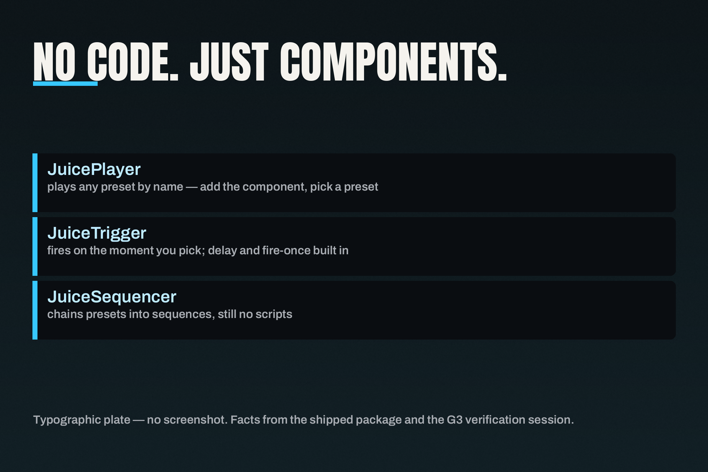
No code. Just components: JuicePlayer, JuiceTrigger and JuiceSequencer play presets without a line of code.
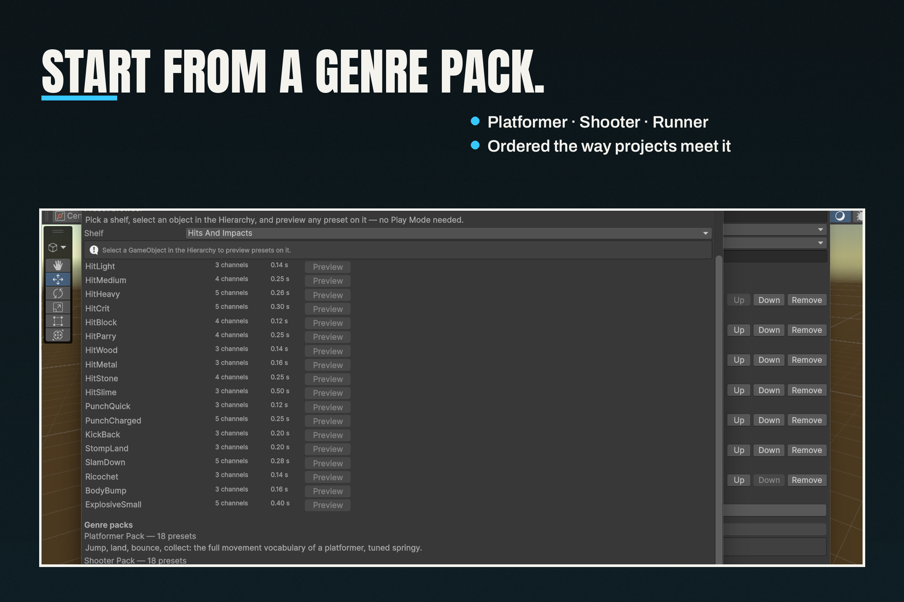
Start from a genre pack: Platformer, Shooter, Runner — ordered the way projects meet it.
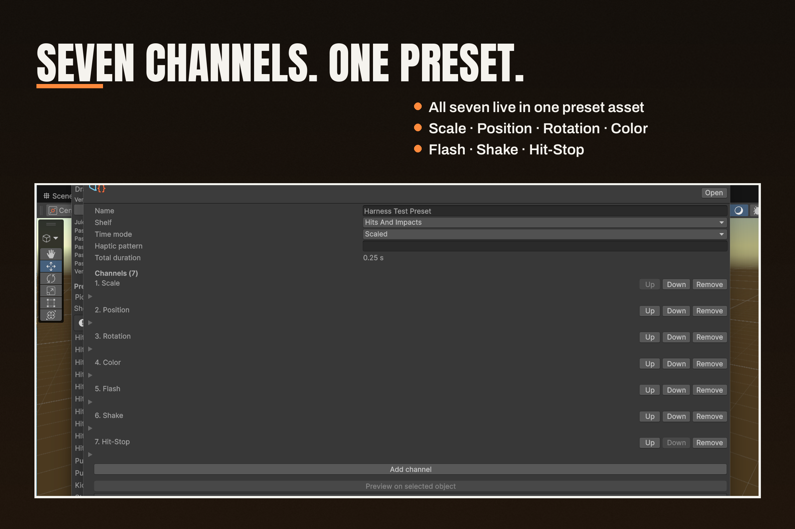
Seven channels. One preset: all seven live in one preset asset — Scale, Position, Rotation, Color, Flash, Shake, Hit-Stop.
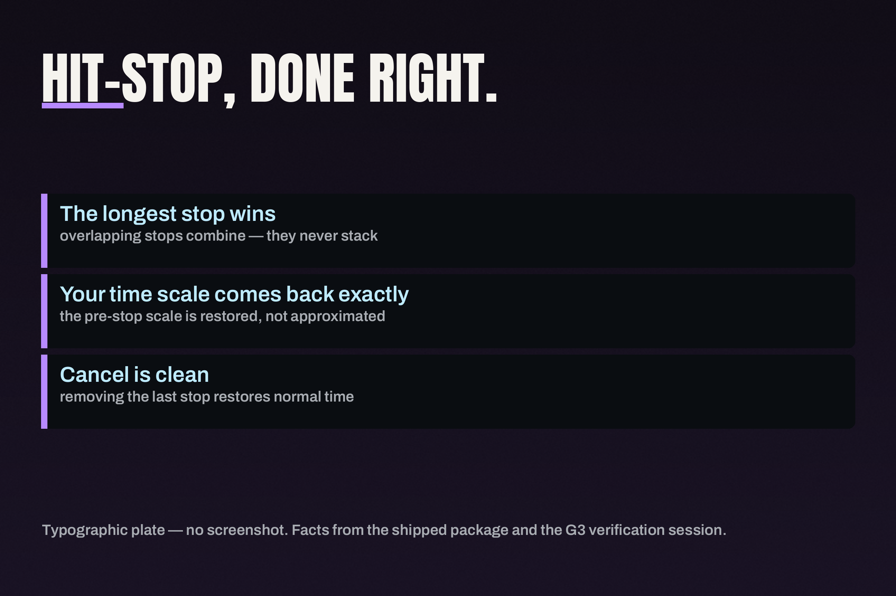
Hit-stop, done right: freeze frames that combine and restore cleanly, so the pause reads as impact, not a stall.
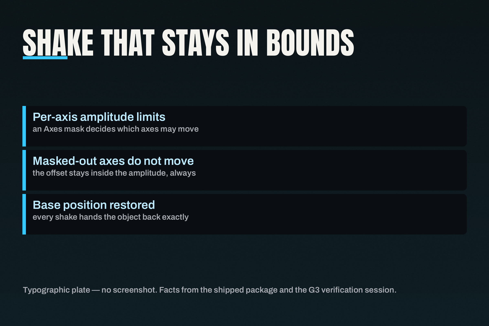
Shake that stays in bounds: an axes mask keeps the shake where you put it, and the camera comes back to rest.
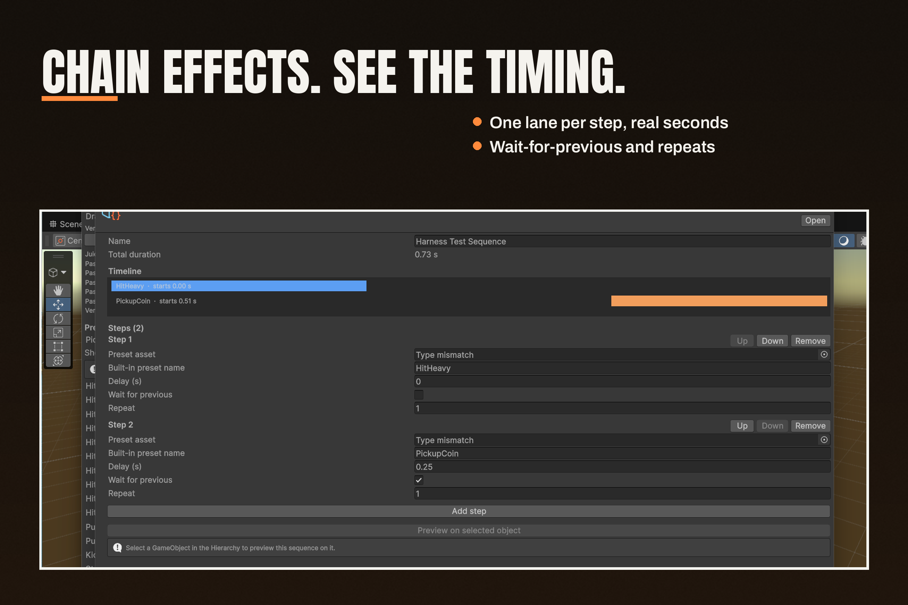
Chain effects. See the timing: one lane per step, real seconds — wait-for-previous and repeats included.
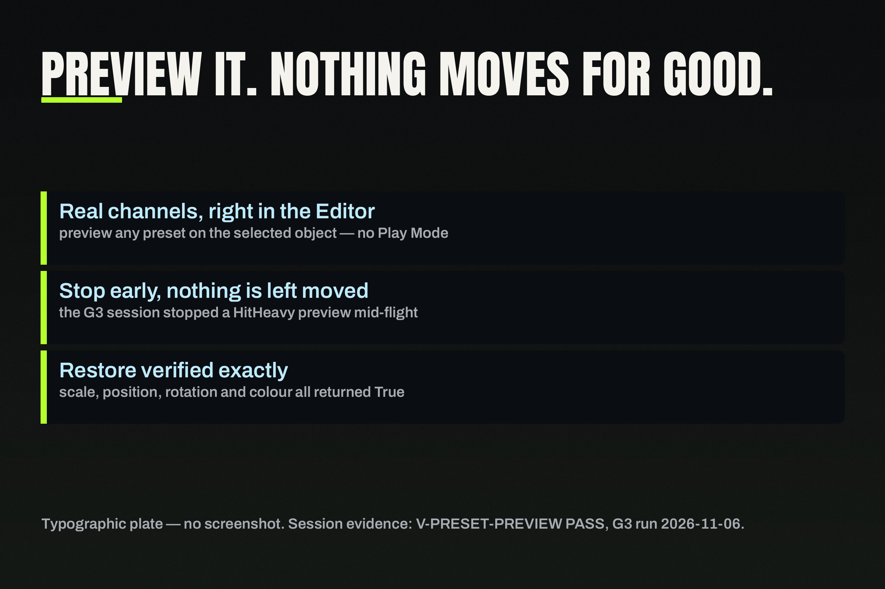
Preview it. Nothing moves for good: preview a preset in edit mode and every transform restores when it ends.
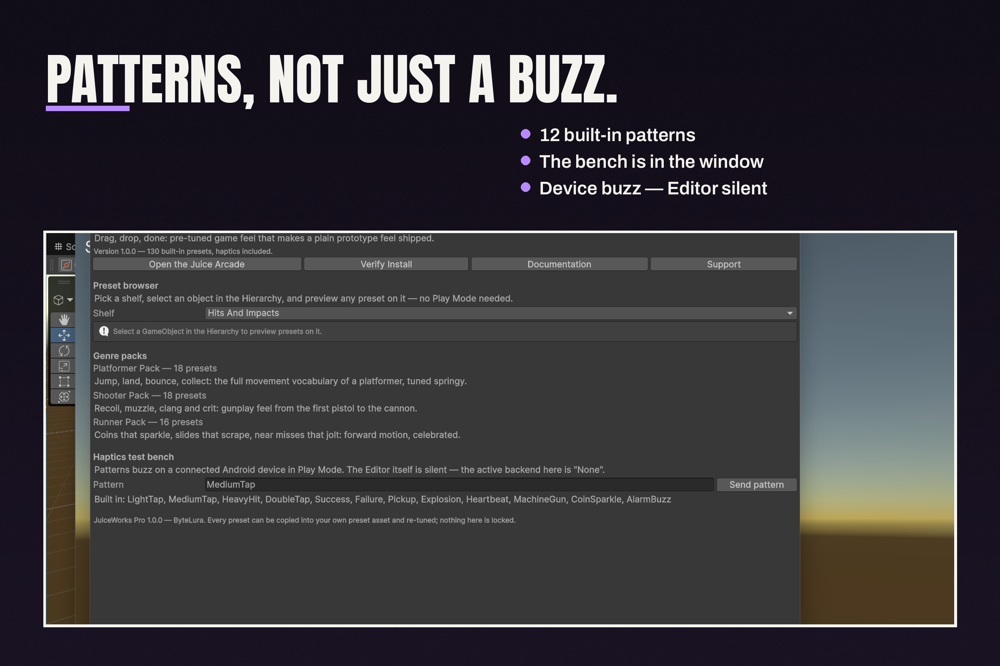
Patterns, not just a buzz: 12 built-in patterns, and the bench is in the window — test them before you ship.
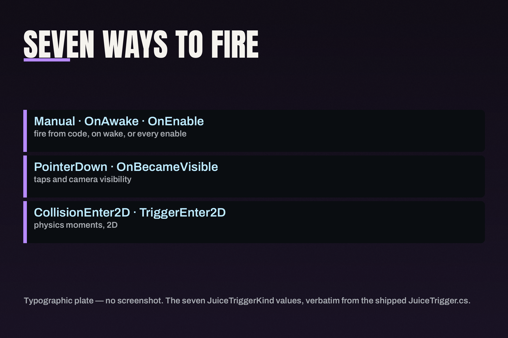
Seven ways to fire: seven trigger kinds, from collision to UnityEvent — pick the one that matches the moment.
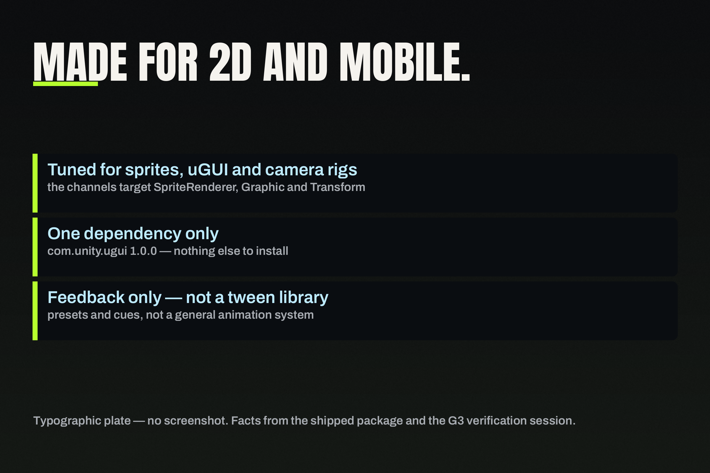
Made for 2D and mobile: feedback for 2D sprites, uGUI elements and camera rigs — and honest about what it is not.
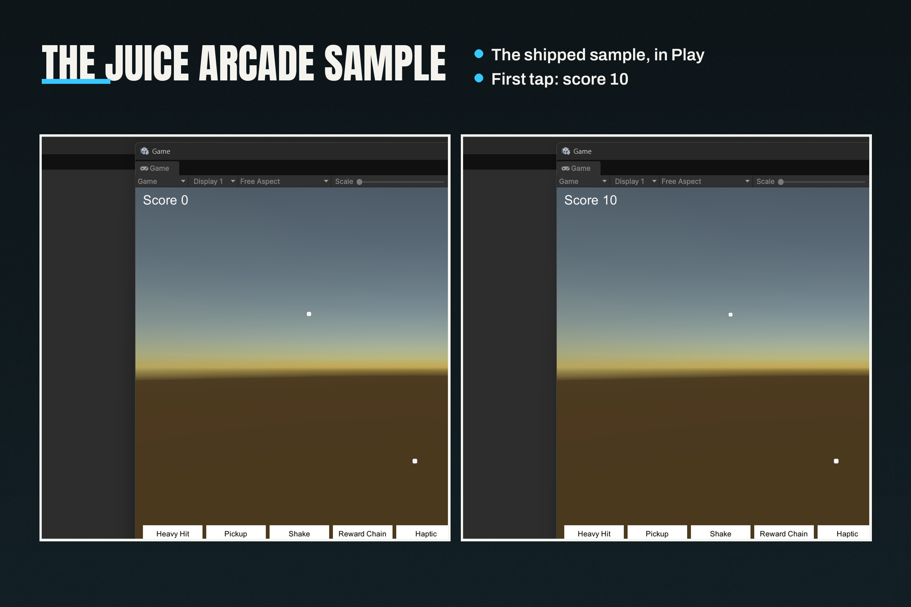
The Juice Arcade sample: the shipped sample, in Play — first tap, score 10.
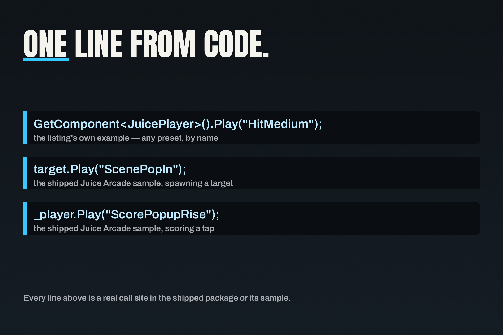
One line from code: when you prefer code, a preset plays from a single call.
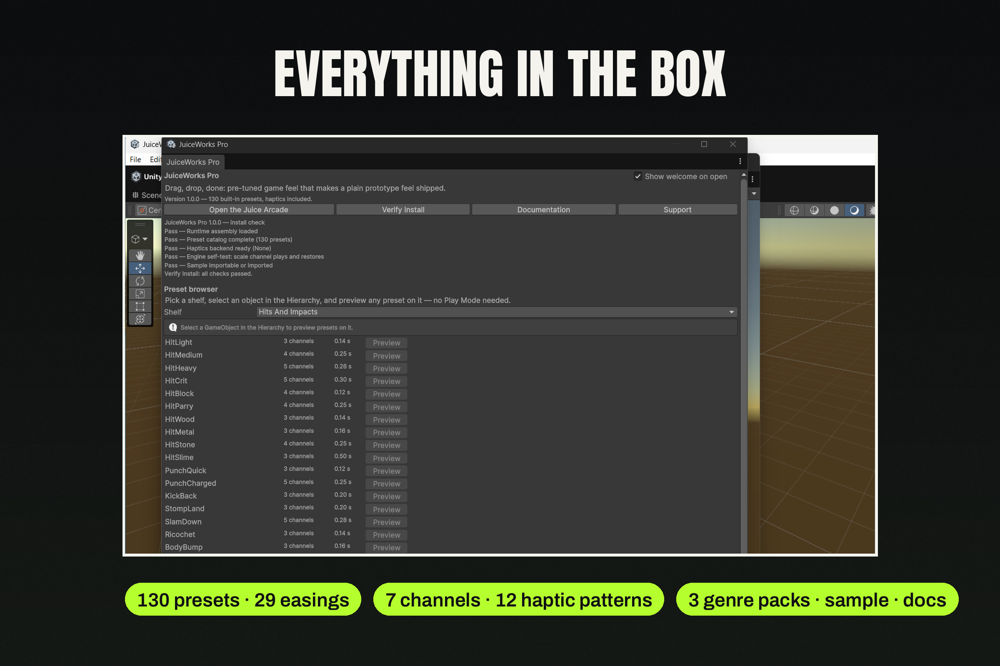
Everything in the box: 130 presets, 29 easings, 7 channels, 12 haptic patterns, 3 genre packs, the sample, and the docs.